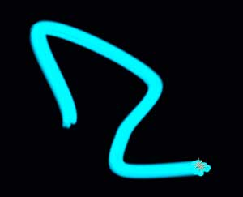

Particle tab> Streaklet group
The Streaklet group can be used to create a long-exposure light painting effect. The Streaklet particle must be active as the Particle Type.

The Streaklet group.
Random Seed
The random seed will vary the orientation of the lines that make up the appearance of the streaks.

Different Random Seed values result in a different appearance of the streak in the two images.
No Streaks
This control sets the number of streaks. ('No' is an abbreviation of 'number'.) High values make more streaks which can create a denser rendered line. A low streak count will reveal the streak as a collection of dots in 3D space.

Left to right, No Streaks set to a low value and high value.
Streak Size
This controls sets the size of the overall streak. A low value gives the streak a thinner, more separated appearance, while high values give a thicker, brighter streak. A value of 0 turns off the streak.

Left to right, Streak Size set low, mid-range and high.